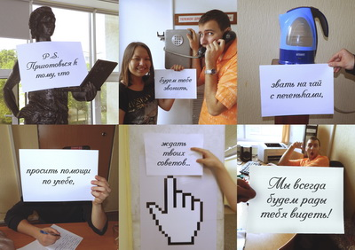
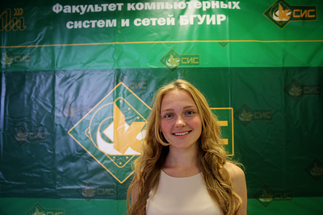

2013 год -
год, который хочется запомнить!
Скоро Новый год! Самый волшебный и искренний праздник, которого с нетерпением ждут и взрослые, и дети. Это пора волшебства, сюрпризов и ярких впечатлений. Пора, когда сбываются мечты. Так хочется дарить радость дорогим и любимым, делиться своим настроением с целым миром, вместе ждать чего-то нового и светлого.
Этот год изменил мою жизнь. Причем кардинально, изменив жизненные ценности, дав переосмыслить отношение к людям, которые меня окружают. Однозначно, 2013 год был самым насыщенным в моей студенческой жизни. И почему-то захотелось перед обновлением настенного календаря подвести итоги прошедшего года, разложить лица и события по полочкам. Что и не преминул сделать.
ЯНВАРЬ
Едва допустившись к сессии после важного факультетского события (а именно приезда Президента), начал ее активно сдавать. На удивление, сессия, к которой так тяжело было допуститься, сдалась без потерь и испытаний нервной системы на прочность. Даже средний балл, вроде, был приятный.
24 января небольшая группка от нашего факультета (а именно Алексей Евгеньевич Лещев, Елена Сергеевна Кулаковская, Леша Ропан, Саша Воробьев, Ева Кукар, Максим Рогов, Сергей Миско и ваш покорный слуга) отправилась в профориентационную поездку в НДООЦ "Зубренок". Возможность вернуться в тот островок детства, который останется в душе навсегда - бесценна. Пусть я не играл в "Добль" и не гулял по ночному "Зубренку", время провел все равно замечательно: получил опыт составления презентации факультета без Интернета (в "Зубренке" не ловит вообще), проведения мероприятий для молодой публики (мне доверили провести "машпит"). И даже Петр Елфимов, своим выступлением обломавший Максима с его дебатами, запомнился на позитиве. Хорошее начало года, не так ли?
Презентация, которую на скорую руку мы сделали для "зубрят", успела в январе съездить на конференцию Solit. Еще бы, с шикарным первым слайдом ее потом задействуют не раз на всевозможных факультетских мероприятиях. Забавно, но освещение конференции на портале факультета появилось раньше, чем статья о поездке в "Зубренок". Так и делаем дела :)
ФЕВРАЛЬ
Тут и рассказывать особо нечего. Месяц, который я больше всего люблю, почти ничем не порадовал. В этом году в качестве эксперимента убрал свою дату рождения из профиля Вконтакте - легко выяснил, для кого мой скромный праздник тоже имеет какое-то значение. Хотя, если честно, было немного грустно узнать, что некоторые "друзья" таковыми только притворяются. Но не будем о грустном. Женсовет в составе Марии Гавриловой, Аленушки Слободчиковой и Юлии Косаковской надолго поднял настроение на мое двадцатилетие, а Илья Старостин и Даша Забродец подарили, не поверите, сковородку с антипригарным покрытием - нужная в хозяйстве вещь.
Вспомнил, в феврале мы с Евой начали работу над брошюрой факультета. У Алексея Евгеньевича возникла идея сделать качественный презентационный пакет факультета, и реализовывать эту идею вызвались председатель студсовета и временный факультетский художник, то есть я. Но, как говорится, "нет ничего более постоянного, чем временное", - работа над брошюрой ведется по сей день.
МАРТ
5 марта компания Itransition пригласила на отборочное тестирование для курсов "Промышленная разработка ПО". Организация, конечно, интересная. Письмо о тестировании пришло за день до оного, так что прогуливать учебу пришлось неожиданно даже для обленевшего к третьему курсу разгильдяя. Благо, тестирование прошел успешно, даже пригласили следующим же набором пойти учиться.
В марте факультет компьютерных систем и сетей традиционно празднует важное событие - День рождения факультета. И если до оформления статей на портале я к тому времени еще не дорос, то к рисованию плаката после целого кастинга среди "профессиональных" дизайнеров (работа одного из участников до сих пор будоражит кровь при одной мысли о ней) меня все же допустили. Одна бессонная ночь - и работа, которой я по сей день горжусь, готова. Пусть и было слегка обидно, что рисовать его мне сразу не предложили, результат добавил к моему скромному престижу свою толику.
АПРЕЛЬ
Олимпиадный месяц, по-другому его и не назовешь. Я еще наивно для себя тогда подумал, что апрель был очень напряженным из-за недостатка свободного времени.
Дружный коллектив студенческого совета, возможно, не догадывается, что за день до финала белорусского финала чемпионата IT-Планета в кабинете Алексея Евгеньевича, на почтовых ящиках Евы Кукар, АЕ и Вити Козуба, а также в ночной переписке в skype творился настоящий хаос. Однажды показав, что умею рисовать в Photoshop, отделаться от этой "уникальной возможности" я уже не смог. Поэтому 8 апреля для меня можно назвать Днем Рисования. Афиши, наградные бланки, бэджи, программки - все было нарисовано в последний момент. Заранее были распечатаны только майки и дипломы, и только потому, что иначе бы их просто не было. Но, черт возьми, как эта суматоха перед мероприятием заряжает на позитив! К тому же вечернее письмо Евы всем задействованным в рабочей группе четко расписало, кто за что, где и когда отвечает, поэтому прошло все действительно слаженно. Приятно удивил Богдан Чайковский, который умудрился за время проведения мероприятия отснять и смонтировать неплохой промо-ролик мероприятия. Красавчик, что еще сказать.
BSUIR Open, господа, звучит гордо! И рабочая группа одного из крупнейших программистских турниров страны это доказала. Отработанная еще на IT-Планете слаженность, конечно, тоже дала о себе знать. Несмотря на "утренние пробки" для нашего идейного лидера Евы Кукар, мероприятие началось вовремя, даже стрелочки-указатели были распечатаны и развешены по корпусу до прихода гостей. Рассказывать, сколько мне пришлось нарисовать всего разного до олимпиады, я не буду. Скажу только, что очень много. Можно отметить только растяжку факультетскую - приятно осознавать, что на фоне твоей работы сфотографируется такое большое количество народа.
Награждать себя после тяжелой работы хорошим отдыхом в кругу замечательных людей в апреле я еще не умел. Поэтому в то время, когда все причастные к проведению олимпиады на факультеты фотографировались на фоне "моей" растяжки и кушали всякие вкусности в VIP-зоне, глупый и наивный я сидел в Itransition и ждал занятий курсов. Да, курсы начались именно в апреле. И в тот день занятий я так и не дождался - предупредить никто не удосужился заранее, что их отменили. Обидно было, конечно, особенно если учесть, что беджика своего, который мог бы пропустить на веселую часть мероприятия в университете, я на прежнем месте не нашел, а до Евы не дозвонился. Возможно, привычка делать дело и сваливать до посиделок - неотъемлимая часть меня.
Своеобразным дебютом на портале факультета для меня оказалась статья о стажировке в Тольятти наших студентов, среди которых был мой дорогой сосед Родион Чаускин. Пусть это был не первый мой писательский и редакторский опыт для портала, но первый материал, который был проработан от начала до конца и в итоге опубликован.
МАЙ
На дворе уже вовсю разыгралась весна. А на сцене БГУИР разыгралась "Студенческая весна" - ежегодное действо, в котором пытаются себя проявить таланты со всех факультетов нашего славного университета. Рассказал бы больше, но так как кроме царившей в 113-4 суматохи вокруг сценария ничего не помню, то и рассказывать нечего. Меня, к слову, участвовать не пригласили, несмотря на мои попытки пробиться в состав выступающих от факультета. Видимо, не дорос я на тот момент до уровня наших актеров и исполнителей.
Студсовет в мае меня почти не дергал. Мелкие поручения не в счет. К тому же я был слишком увлечен обучением на курсах в Itransition. Экзамен, кстати, сдал неплохо. Пусть PHP-шники моего уровня на тот момент компании нужны не были, работу на будущее все равно предложили, хоть и на Ruby.
Запомнилось отчего-то забавное поручение в конце мая: срочно подготовить сборную статью об Алексее Ермолаеве - победителе международного конкурса "Я - рэпер" в Москве. До этого перепечаткой чужого материала заниматься не доводилось, а тут такой опыт был получен, ибо взять интервью или хотя бы просто лично побеседовать с героем статьи возможности не представлялось.
Незаметно подкралась сессия. Допуститься к ней проблем не составило. Даже еле написанный за ночь курсач не стал помехой на пути к четвертому курсу. А допуск к сессии - это уже половина дела.
ИЮНЬ
Собственно, сессия. Причем самая халявная за 3 курса. Я не сдавал ровным счетом почти ничего, и за это почти ничего еще и получил хорошие баллы. Мечта любого студента, а не сессия.
Позвали петь на юбилее бывшего министра культуры Республики Беларусь. Так неожиданно и приятно :)
Остальная творческая составляющая июня плавно стекалась к одной дате - 28 июня. Ничем не примечательный день для рядового жителя города Минска стал значимой датой для огромного количества выпускников нашего факультета, и не только. Вручение дипломов как-никак.
Так уж совпало, что в этот же день свой ДР должна была отпраздновать Ева Кукар - председатель студсовета, активистка, красавица и просто замечательный друг. Понятно, что до уровня министра образования и Республиканского бала выпускников было не дотянуть, но когда в начале июня в голову пришла идея подарка для Евы, реализовывать ее бросился в тот же день. Почему идея фотоальбома со стихами пришла ко мне в душе (на "у" ударение), не знаю. Вообще, лучшие идеи почему-то ко мне чаще всего приходят именно там.
Работа над этим фотоальбомом принесла мне столько душевного удовлетворения, что словами не передать. Одно то, как активно откликнулся народ на призыв сфотографироваться для коллажа в конце альбома, доказывало, что Ева умудрилась сдружиться с огромным количеством людей. Даже декана уговаривать не пришлось сфотографроваться с листиком с нарисованным на нем сердечком. Он только просил его жене не показывать :) Большое спасибо Максиму Рогову, который помогал с придумыванием текста для фотоальбома. Не один вечер мы сидели над ним и думали, в каком порядке расставить слова на листиках для коллажа, чтобы на одной странице фотоальбома уместилась законченная мысль. Судя по реакции Евы, удивить получилось. Месяц работы прошел не зря.
Да, еще в этот месяц пришло решение уйти из студсовета, чтобы заняться обустраиванием своей жизни.
ИЮЛЬ
Наивный. Черт меня дернул поделиться с Евой решением уйти. Вроде бы, какая разница выпускнице до того, что дальше будет твориться в студсовете? Ан нет, уговорила остаться. Попросила, я бы сказал. Вот так в очередной раз женщина повлияла на мое решение.
Чем еще особенен для меня июль? Конечно, приемной комиссией. В этом году сразу позвали работать на 3 этаж, в кабинет к ответственным секретарям и руководству. Приятное доверие и не менее большая ответственность. В очередной раз повертелся на внутренней "кухне" ведения дел в БГУИРе. Пусть не все так гладко, как хотелось бы, но тот бешеный конкурс на бюджетные места, который был в этом году, заставил поработать. Работа без выходных и обедов - даже привык как-то.
25 июля ко мне в гости приехала моя любимая сестра. По такому случаю взял выходной в приемке и посвятил этот день полностью ей. Спасибо Илье Старостину и Даше Забродец, друзьям-минчанам, которые помогли сделать этот день запоминающимся для моей сеструньи. Гитару ей подарил, кстати, ко дню рождения :)
Рассказывать о приемке могу бесконечно долго, настолько много впечатлений она оставляет. Понравилось работать со слегка апатичным, но практично настроенным Максимом Михневичем. Пусть он и занимал мой стул у телефонисток, зато мог подкинуть до "Риги" за булочками на обед. А еще Максим изменил мое отношение к людям из "высшего звена". Забавно было наблюдать, как руководители разных факультетов по-разному относятся к студентам: кто-то с уважением относился к тому объему работы, который иногда сваливался на наш кабинет, а кто-то важным считал только то, сколько минут в день он пересидел, при этом почти ничего не делая. Забавно и грустно одновременно.
АВГУСТ
Приемная комиссия, завершившаяся для некоторых ее сотрудников еще 11 августа, меня сопровождала до самого конца месяца, а иногда даже дергала и после. Жаловаться не на что, заплатили мне за работу соответственно. Да и возможность напрямую общаться с проректором по учебной работе и информатизации - так самооценку поднимает, я вам скажу.
Параллельно с работой в приемке выполнял еще одно поручение: на портале нужно было подготовить интервью с упоминаемой уже не раз в рамках этой записки Евой Кукар. И так уж вышло, что взять интервью она попросила меня. Долго, медленно и скрупулезно прорабатывалась каждая деталь оформления. Текст вычитывался не раз. Когда человек сам публикует статью о себе, затягивается это действительно надолго.
Конец месяца я посвятил отдыху. На работу пригласили только в сентябре, поэтому времени хватало даже на придумывание каких-то почти никому не нужных статей для портала. А может и нужных. Не знаю, читателям судить.
СЕНТЯБРЬ
И тут меня накрыло. Во-первых, все же пригласили на работу в Itransition. Понятное дело, времени свободного стало в разы меньше. Во-вторых, назначили координатором пресс-центра факультета. Совмещать все сразу, причем уделяя всему время так, чтобы делать дела качественно, действительно тяжело, - не врали старшие товарищи.
В студсовете грянули перемены. Новый председатель студсовета, новая структура, новые главы секторов - все новое. Даже ребята новые. Не все оказались довольны переменами. Честно скажу, сам я тоже к некоторым переменам до поры до времени относился скептически. Тот мощный механизм, который автономно мог действовать в конце прошлого семестра на любом мероприятии, давал трещину. А может, я начал стареть, вот и показалось.
Отчего-то запомнилось, что семестр начался с обнимашек Наташи Пальчех. Вся ирония в том, что я помнил ее только визуально по мероприятиям некоторым, а Наташа прям такая вся милая и мимимишная обниматься полезла, как будто сильно соскучилась. Ну, не мог же я быть против :)
Много статей в этом месяце пришлось опубликовать на портале по долгу службы. В пресс-центре катастрофически не хватало людей. Максим Рогов, я и Наташа Пальчех на подмоге - согласитесь, не густо. Да, еще иногда материалы подкидывал Витя Козуб, если в научно-техническом секторе происходило что-то интересное, но все равно людей в сумме очень мало. Пригласил Машу Марчук, талантливую первокурсницу, попробовать свои силы в публицистике. Вроде, что-то получилось.
ОКТЯБРЬ
Я что-то писал уже о своей апрельской наивности по поводу загруженности. Октябрь - вот тот месяц, который меня сломал.
Начался месяц с немного странной поездки в "Зубренок". Вернуться туда была приятно, этого не отнять. К нам и отношение администрации лагеря было хорошее. Но вот только начальство факультета в лице Алексея Евгеньевич и Евы Владимировны уехало домой в первый день, оставив меня за старшего. Поверьте, в том, чтобы следить за кучей студентов в детском лагере, нет ничего интересного. Они хуже детей. И себя занудой начинаешь чувствовать. А еще пришлось в них немного разочароваться. В общем, устал от этой поездки я куда больше, чем от предыдущей.
Отчего-то никак не могу запомнить, когда же у нас в стране День учителя. Тем не менее, в этом году на республиканском чествовании лучших преподавателей страны мне удалось выступить в качестве вокалиста. Как нравится хвастаться, "цветы дарили только мне и Искуи Абалян". Если не знаете, кто такая Искуи Абалян, погуглите. Поет она действительно классно.
 15 октября в нашем вузе прошло традиционное чествование матерей лучших студентов БГУИР, посвященное Дню матери. На фотографии слева ректор пожимает руку моей маме. Сделать ей такой подарок было приятно. Я не считаю себя хорошим сыном, но радовать маму каждый раз очень приятно. Надеюсь, у нее еще будут поводы гордиться мной помимо этого.
15 октября в нашем вузе прошло традиционное чествование матерей лучших студентов БГУИР, посвященное Дню матери. На фотографии слева ректор пожимает руку моей маме. Сделать ей такой подарок было приятно. Я не считаю себя хорошим сыном, но радовать маму каждый раз очень приятно. Надеюсь, у нее еще будут поводы гордиться мной помимо этого.
Полным ходом шла подготовка к "Студенческому дебюту". Планы, само собой, были грандиозные. Забавно то, что полноценной организацией и подготовкой занялся пресс-центр факультета, а не культурно-массовый сектор (Полину Саттарову позволю себе отнести к пресс-центру, она его возглавляла до меня как-никак). Мои вокалисты-первокурсники и радовали, и огорчали. Позитива от работы с ними получал много, это точно. Но выкладываться приходилось на 120%, чтобы везде успеть.
В пресс-центре тоже все не улегалась жизнь. Поводы для статей были, и много. Неожиданно для самого себя взял интервью у проректора Бориса Викторовича Никульшина. Ну, а почему бы и не воспользоваться знакомством с бывшим деканом факультета? Кроме того, Максим Рогов предложил идею проведения "Школы Журналистов" - проекта, который бы помог набрать людей в наш скромный пресс-центр. Заодно в копилку проектов можно было его добавить. Уцепился за эту идею, начал ее раскручивать, доводить до ума, рекламировать.
Сломал меня конкурс "Студент года". Приятно, что факультет выделил меня, как достойного участника. Хотя то, как мы с Максимом Роговым хвалили друг друга, чтобы выбрали именно другого человека, надо было видеть. В итоге самолюбие победило, с похвалами согласился, вот и выбрали мою кандидатуру. А вот за помощь в подготовке Максиму огромное спасибо. Он не только номера помогал придумывать, но еще и людей нашел, которые в них участвовали. Поверьте, заручиться поддержкой такого друга дорогого стоит.
И мы готовились. Бессонные ночи, десятки отвергнутых глупых идей, рисование олимпийского флага гуашью, выбор музыки для выходов - столько мелочей, которые отнимают силы и убивают нервы. К конкурсу я подошел настолько выжатым, что умудрился заснуть во время концерта, пока жюри "подводило итоги". Кавычки не случайны. С итогами я не согласен до сих пор. Нет, я не считаю себя достойным победы. И ни в коем случае не имею ничего против Сергея Козловича, который победил на этом конкурсе. Но сам факт, что его победа была определена заранее, меня бесит. Да, бесспорно, он мощная медийная персона, харизматичный и талантливый молодой человек. И все же мой голос за Аню Кособуцкую, которая, на мой взгляд, выступила куда качественнее и интереснее.
Ах, да. В день проведения конкурса я уволился из Itransition. Нормальный человек бросил бы студсовет и остался бы зарабатывать деньги. А я вот почему-то выбрал студсовет. Дурак, наверное.
НОЯБРЬ
Отдых на горизонте? Как бы не так!
12 ноября на сцене актового зала БГУИР решалась судьба огромного количества потраченных усилий. "Студенческий дебют 2013" открылся выступлением нашего факультета. Концерт подготовили мы действительно сильный. Но я до сих пор чувствую свою вину за вокальные номера. Достигнув хорошего исполнения в маленьком репетиционном помещении общежития, я не подумал о том, что на сцене первокурсники настолько разволнуются, что забудут ноты. И то, что нам не хватило всего несколько баллов до 3 места, во многом моя вина. Нужно было по-другому ставить репетиции, нужно было больше пробовать петь на сцене. Пусть жюри как-то странно оценивало выступления в этом году, у нас все равно был шанс. И мы его упустили.
Зато как раскрылась на сцене Маша Марчук! Это безумно талантливая первокурсница. Сыграла потрясающе, вытянув на себе весь концерт. И в вокальных номерах не подвела. Наша троица (Кирилл, Максим и я) действительно вырастила монстра :)
Не дал уйти в депрессию после очередной неудачи набравший обороты проект "Школа Журналистов". На удивление много студентов, причем не только с ФКСиСа, решили принять в нем участие. И преподавателей найти тоже оказалось не так уж сложно, как казалось изначально. Шутка ли, главный редактор tut.by Марина Золотова и ведущий репортер этого же ресурса Катерина Синюк абсолютно безвозмездно согласились провести лекцию по созданию новостей для будущих программистов и инженеров. Будет, что детям рассказать. Максим Юрьевич Максак провел интереснейшее занятие по видеорепортажам. Мы с Максимом Роговым тоже старались преподавать интересно и занимательно. Вроде, получилось неплохо. По крайней мере, цель проекта достигнута была, людей в пресс-центр мы набрали ;)
А еще в ноябре мы студсоветом ездили во Львов. Море впечатлений, тонны интересной информации, огромный багаж фотографий - и все это за выходные. Наш немного странный, но при этом крайне харизматичный экскурсовод Богдан смог и рассказать много чего, и показать. Да и вообще, сама атмосфера, которая царит во Львове, особенная. Я был в других украинских городах, но такого колорита, такой необычности местных жителей нигде не замечал. Одно разнообразие Львовских кофеен завораживает. Ей Богу, в каждом подъезде кофейню найти можно. У многих, наверняка, осталась в голове мысль: "Хочу еще!"
ДЕКАБРЬ
Вроде, уволился, а времени больше не стало. Что я делаю не так?
Начать месяц удалось с недельного отдыха. Таки отстранила меня Ева Владимировна от дел, посмотрев на то, как я засыпаю на ходу. После отдыха оперативненько провели День абитуриента ФКСиС. То, как он прошел - это сказка просто. Было всего одно организационное собрание, на котором мы решили, кто за что отвечает. И на следующий день мероприятие прошло на ура. Каждый знал, что делать. Никаких суматох, никаких непоняток. Даже попытки очаровательной Алены Александровны из пресс-службы университета вмешаться в ход мероприятия не смогли смутить опытных экскурсоводов-студсоветчиков. Я доволен тем, как этот день прошел. Приятно, когда доверенное тебе задание проходит качественно. Думаю, другие факультеты повторить так же не смогут.
Попробовал себя в новом жанре. Аналитическая статья о судьбе олимпиадного программирования у нас в университете писалась долго и вдумчиво. Когда пресс-служба университета разместила эту статью без указания источника у себя на сайте, я был реально взбешен. Нехорошо так поступать. Авторское право и журналистский этикет еще никто не отменял.
 Ближе к концу месяца удалось поучаствовать в Литературном вечере, организованном Максимом Роговым. Есть у нас еще таланты на факультете! И ребята это доказали. Восторгаться Машей Марчук я могу долго, но у Максима, оказывается, целая ватага таких же поэтично настроенных первокурсников.
Ближе к концу месяца удалось поучаствовать в Литературном вечере, организованном Максимом Роговым. Есть у нас еще таланты на факультете! И ребята это доказали. Восторгаться Машей Марчук я могу долго, но у Максима, оказывается, целая ватага таких же поэтично настроенных первокурсников.
Рассказывать подробно, как прошел факультетский корпоратив, не буду. Организаторы (Максим Рогов и Кирилл Чугаинов) постарались на славу, это точно. Градус веселья и угара на мероприятии стоял такой, что публика потом еще несколько дней распевала песни про деканат и студсовет. Сам же я решился побыть Веркой Сердючкой, настолько раскрепостился. Не жалею ни секунды. В любом случае, это стоило видеть, рассказывать про корпоратив не так интересно.
Что еще принес декабрь? Признание. За месяц успел получить сертификат участника проекта "100 идей для Беларуси", премию Мингорисполкома, но самое главное - похвалы от друзей из студсовета и от деканата. Когда делаешь что-то, важно знать, что делаешь ты это не зря. И простая похвала порой куда лучший стимул, чем денежные премии на карточку.
Люди, которые меня изменили
Хочется еще отдельно упомянуть некоторых людей, которые за год очень сильно на меня повлияли.
Ева (Владимировна) Кукар. Зам. декана ФКСиС, между прочим. Так уж получилось, что большую часть моей работы в студсовете курировала она. Начиналось все с рисования плакатов, продолжается полноценными проектами и всяческой поддержкой деканата. Поддержка Евы во многом определила тот факт, что я не сдался на полпути и не бросил любимое занятие. А еще она умудрилась стать тем другом, на которого я равняюсь. Это тот человек, который изменил мою жизнь. Спасибо, Ева!
Максим Рогов. Я не перестаю удивляться энергии этого человека. Он может не спать несколько дней, при этом носиться между корпусами, вынашивая какие-то свои безумные идеи, не забывая посещать пары хоть иногда. А еще Максим из того типа людей, которые за общее дело готовы все отдать. Он мне очень сильно помогал в этом году. И не раз вдохновлял на добрые поступки. Спасибо, Максим!
Алексей Евгеньевич Лещев. Зам. декана ФКСиС. Очень сильный духом человек. То, как Алексей Евгеньевич отдает себя работе, достойно восхищения. Пускай кое-где он слишком сильно рассчитывает на студсовет, но энергетика, которую он отдает при общении, крайне позитивная. Приятно было ощущать поддержку такого важного на факультете человека в течение всего года. Спасибо, Алексей Евгеньевич!
Полина Саттарова. Вдохновляет с первого курса. Легендарная личность нашего факультета. Полина научила меня отдыхать, возможно, сама того не зная. Спасибо, Полина!
Леша Ропан. Черт подери, я знаком с олимпиадником-международником, работающим в Яндексе! И несмотря на это, Леша абсолютно простой в общении человек, склонный к безудержному веселью и настольным играм. То, как Леша относится к достижению целей, заставляет задуматься. Спасибо, Леша!
Маша Марчук. Эта безумно талантливая первокурсница вызывает мое восхищение. Очень красиво поет, проникновенно играет, при этом очень воспитанная и скромная барышня. Когда смотришь на таких людей, хочется тоже быть лучше. Спасибо, Маша!
Максим Валерьевич Михневич. Сильный человек, знающий, что ему надо в жизни. Научил смотреть на некоторые вещи по-другому. Спасибо, Максим!
Моя мама. За всеми своими заботами и делами я часто забываю о том, что где-то далеко есть человек, который любит меня любого: успешного или нет, доброго или злого, отдохнувшего или истощенного. Человек, без которого я не был бы таким, какой я есть. Только маме не важно, какое место наш факультет занял на студдебюте или какой проходной балл в этом году на ФКСиС. Ей только хочется, чтобы я был рядом. За любовь, за понимание и веру в меня, спасибо, Мама!
Вместо эпилога
Если вы дочитали досюда, то вам либо нечем больше заняться, либо я все же смог заинтересовать вас своей историей. Отчего-то кажется, что я провел этот год достойно. И теперь есть только одна цель: следующий год провести еще лучше. Чего и всем желаю.
С уважением, координатор пресс-центра ФКСиС,
пока еще студент 4 курса,
грустный балагур
Мефодий Д'Арк